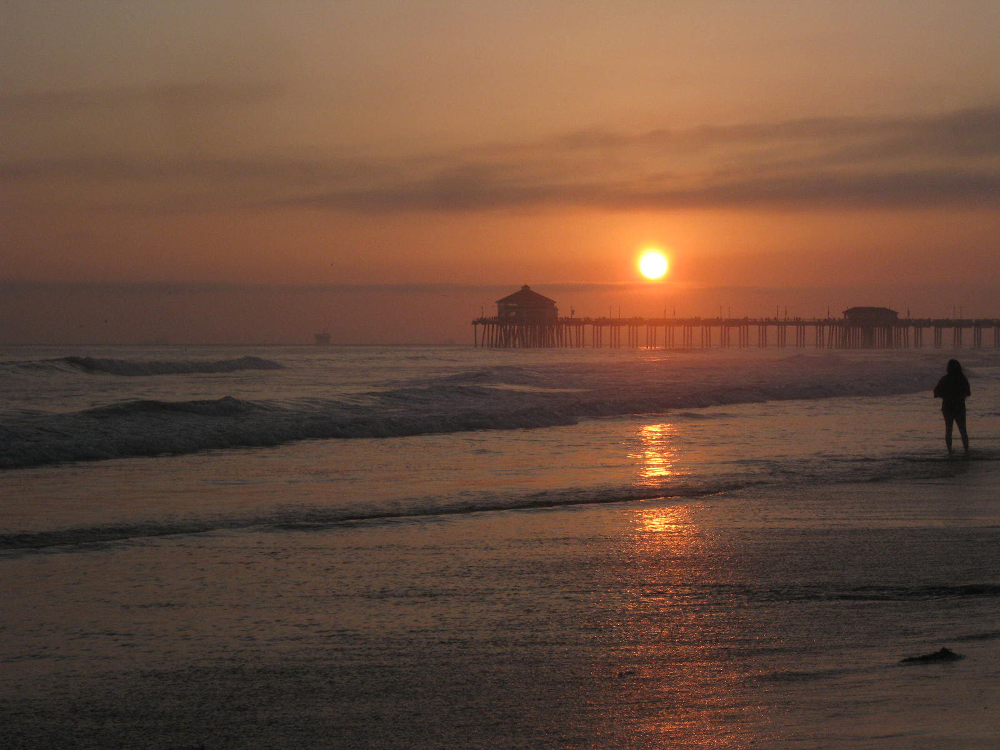
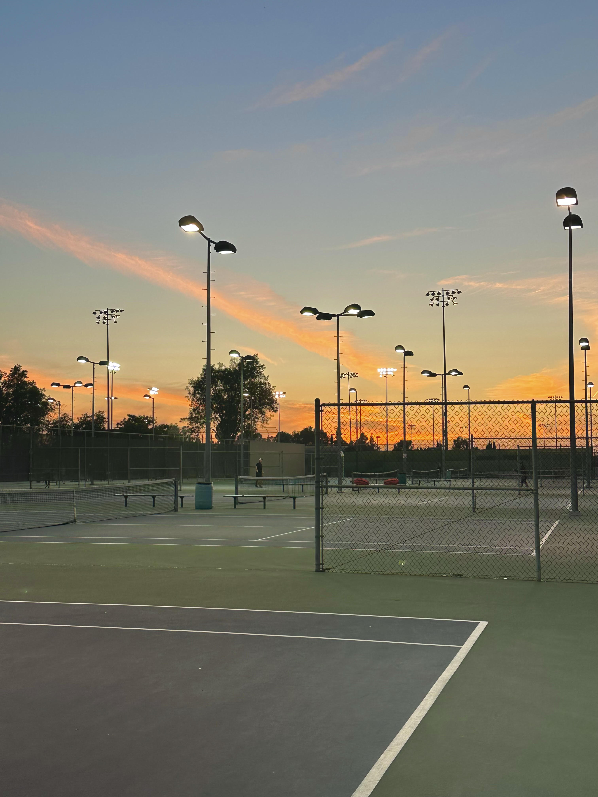

What is a sunset?
A sunset is the moment when the sun appears to disappear below the horizon, as a result of the Earth's rotation.
Common Questions
- Why is it colorful?
- When the sun is low in the sky, sunlight has to travel through a thicker part of the atmosphere, which scatters blue light more strongly.
This leaves more red and yellow light to be seen, which is why sunsets are often red or orange.
- When does it happen?
- They usually happen every 24 hours, but the specific time each day varies throughout the year due to Earth's orbit around the sun.
Wanna know more?
click here!! Science Behind Sunsets
What do they look like?

